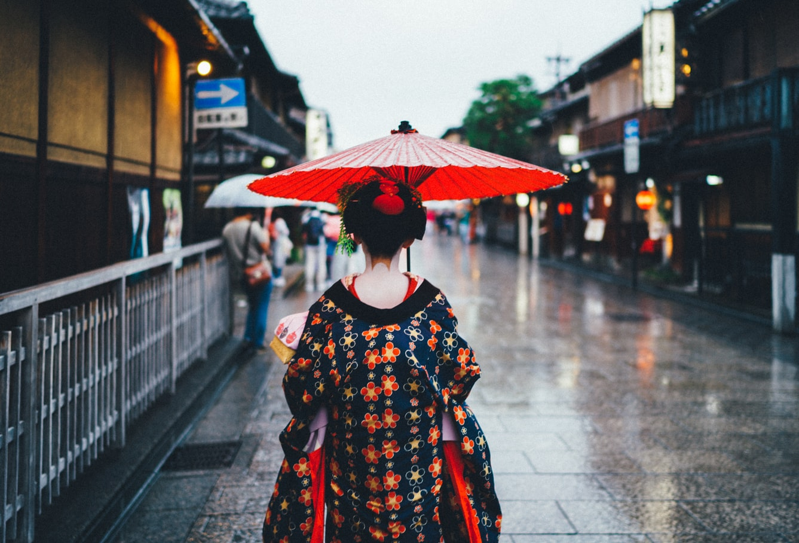

Stunning Japanese clothing
Summary
Witness the most beautiful and unqiue traditional Japanese clothing Japan has to offer. This christmas get your own kimono to match the bright colours of the fireworks on christmas!
Full Text
Kimono is a traditional Japanese garment, and the national dress of Japan. The kimono is a T-shaped wrapped-front garment constructed of mostly rectangular pieces of fabric, and is sewn with set sleeve lengths, hem lengths and little tailored to the body.
This christmas I got to wear a beautiful kimono, it had a dark blue tone with red and yellow flowers all over it! Just wearing it was something special because it was so pretty and seeing others wearing their own unique kimonos was a treat for my eyes
You can typically wear a kimono on most events such as a wedding where you would wear a white kimono with red ribbons and on the opposite, formal black kimonos are worn for funerals but outside of that are considered to be bad luck. I've had the pleasure of wearing mine for christmas and there was no
color code restrictions for that and people were allowed to be as creative as they want to be.
Kimonos are a great way to show respect to Japanese people because you are trying to fit in with the rest and follow their traditions while also getting a feel for their culture and I think its great. You shoul definitely participate in one of the events if you are ever in Japan
and definitely wear a kimono!
Author: Jannet Clark
Date: 23/08/2020